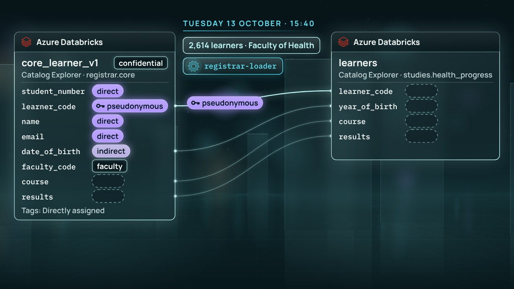

← Anterior · Película 3 de 8
Muestra lo mínimo
Un estudio necesita registros de estudiantes sin saber quiénes son. Cada columna se oculta de forma que conserve lo necesario.
Temas › Protección de datos y privacidad › Solo lo que puedes ver
Las tablas del registro recibían a sus lectores permiso por permiso: 163 permisos a mano en 58 tablas, una tabla nueva que esperó seis días a su primer lector, y nueve tablas cuyo dueño era quien las hizo. Ahora se mudan a un catálogo propio, y Mei Tanaka pide un plan antes de un solo permiso.
Borrador · El autor aún no lo ha revisado, así que algunos detalles pueden cambiar.
Pausa para pensar está activada: la película se detiene con una pregunta al final de los capítulos.

Descargar el video (en inglés)Archivos de subtítulosLeer el guion (en inglés)
¿Y ahora?
Las tres preguntas de Pausa para pensar, para una clase o un equipo. Abre una para ver la respuesta.
La película muestra Databricks y GitHub como los mostraban sus documentos el 10 de noviembre de 2026. Estas son las páginas que sigue.
Película 4 de 8.
← Anterior · Película 3 de 8
Un estudio necesita registros de estudiantes sin saber quiénes son. Cada columna se oculta de forma que conserve lo necesario.

Siguiente · Película 5 de 8 →
Etiquetas gobernadas, puestas una vez desde el archivo de la dueña, llevadas por el linaje a cada tabla, y una regla fijada antes donde dos se encuentran.